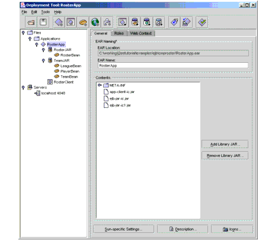
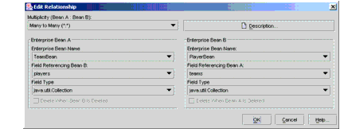
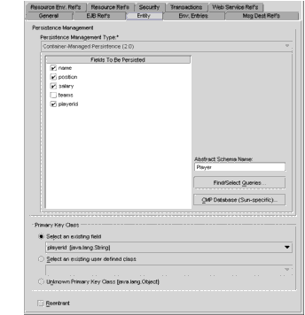
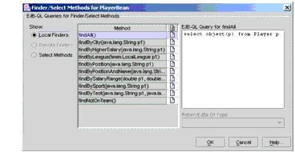
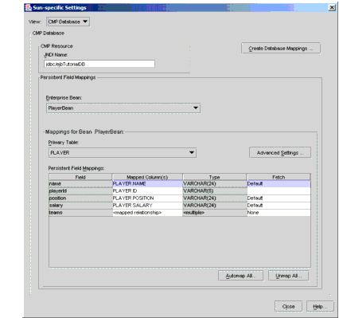

A Guided Tour of the RosterApp Settings
This section introduces you to the settings of the deployment descriptors for entity beans with container-managed persistence and relationships. As this tour guides you through the
deploytoolscreens, it discusses the highlights of the tabs and dialog boxes that appear.To begin our tour, please run
deploytooland open theRosterApp.earfile, which is in the<INSTALL>/j2eetutorial14/examples/ejb/provided-ears/directory.RosterApp
To view the deployment settings for the application, select the
RosterAppnode in the tree view.General Tab (RosterApp)
The Contents field displays the files contained in the
RosterApp.earfile, including the two EJB JAR files (ejb-jar-ic.jarandejb-jar-ic1.jar) and the application client JAR file (app-client-ic.jar). See Figure 27-4.

Figure 27-4 General Tab of
RosterAppJNDI Names Tab (RosterApp)
The Application table lists the JNDI names for the enterprise beans in the
RosterAppapplication.The References table has one entry. The EJB Ref entry maps the coded name (
ejb/SimpleRoster) in theRosterClientto the JNDI name of theRosterBeansession bean.RosterClient
To view this client, expand the
RosterAppnode by clicking its adjacent key icon in the tree view. Next, selectRosterClient.JAR File Tab (RosterClient)
The Contents field shows the files contained by the
app-client-ic.jarfile: two XML files (the deployment descriptors) and the class files (RosterClient.class,Debug.class,LeagueDetails.class,PlayerDetails.class, andTeamDetails.class).EJB Ref's Tab (RosterClient)
The
RosterClientaccesses a single bean, theRosterBeansession bean. Because this access is remote, the value in the Interfaces column isRemoteand the value for the Local/Remote Interface column is the bean's remote interface (roster.Roster).RosterJAR
In the tree view, select
RosterJAR. This JAR file contains theRosterBeansession bean.General Tab (RosterJAR)
The Contents field lists three packages of class files. The
rosterpackage contains the class files required forRosterBean:the session bean class, remote interface, and home interface. Theteampackage includes the local interfaces for the entity beans accessed by theRosterBeansession bean. Theutilpackage holds the utility classes for this application.RosterBean
In the tree view, expand the
RosterJARnode and selectRosterBean.General Tab (RosterBean)
This tab shows that
RosterBeanis a stateful session bean with remote access. Because it allows no local access, the Local Interfaces fields are empty.EJB Ref's Tab (RosterBean)
The
RosterBeansession bean accesses three entity beans:PlayerBean,TeamBean, andLeagueBean. Because this access is local, the entries in the Interfaces columns are defined as Local. The Home Interface column lists the local home interfaces of the entity beans. The Local/Remote Interfaces column displays the local interfaces of the entity beans.To view the runtime deployment settings, select a row in the table. For example, when you select the row with the Coded Name of
ejb/SimpleLeague, theLeagueBeanname appears in the Enterprise Bean Name field. If a component references a local entity bean, then you must enter the name of the referenced bean in the Enterprise Bean Name field.TeamJAR
In the tree view, select the
TeamJARnode. This JAR file contains the three related entity beans:LeagueBean,TeamBean, andPlayerBean.General Tab (TeamJAR)
The Contents field shows two packages of class files:
teamandutil. Theteampackage has the entity bean classes, local interfaces, and local home interfaces for all three entity beans. Theutilpackage contains utility classes. It also shows the database schema file that is used to map the enterprise bean's fields to the database.Relationships Tab (TeamJAR)
On this tab (Figure 27-5) you define the relationships between entity beans that use container-managed persistence.

Figure 27-5 Relationships Tab of
TeamJARThe Container Managed Relationships table summarizes two relationships:
TeamBean-PlayerBeanandLeagueBean-TeamBean. In theTeamBean-PlayerBeanrelationship,TeamBeanis designated as EJB A andPlayerBeanas EJB B. (This designation is arbitrary. We could have assignedPlayerBeanto EJB A, and assignedTeamBeanto EJB B.)Edit Relationship Dialog Box (TeamJAR)
To view the Edit Relationship dialog box (Figure 27-6), on the Relationships tab select a row and click Edit. For example, to view the
TeamBean-PlayerBeanrelationship, select the row in which the EJB A value isTeamand then click Edit.
TeamBean-PlayerBeanRelationshipThe Multiplicity combo box offers four choices. For this relationship, the Many To Many choice should be selected because a team has many players and a player can belong to more than one team.
The information in the Enterprise Bean A box defines the
TeamBeanside of the relationship. The Field Referencing Bean B combo box displays the relationship field (players) inTeamBean. This field corresponds to the relationship access methods in theTeamBean.javasource code:

Figure 27-6 Edit Relationship Dialog Box of
TeamJARThe selection of the Field Type combo box is
java.util.Collection, which matches theplayerstype in the access methods. Theplayerstype is a multi-valued object (Collection) because on theTeamBeanside of the relationship the multiplicity is many.The
TeamBean-PlayerBeanrelationship is bidirectional: each bean has a relationship field that identifies the related bean. If this relationship were unidirectional, then one of the beans would not have a relationship field identifying the other bean. For the bean without the relationship field, the value of the Field Referencing combo box would be<none>.
LeagueBean-TeamBeanRelationshipIn the Edit Relationship dialog box, the Multiplicity choice should be One To Many. This choice indicates that a single league has multiple teams.
For
LeagueBean, the relationship field isteams, and forTeamBeanit isleague. BecauseTeamBeanis on the multiple side of the relationship, theteamsfield is aCollection. In contrast, becauseLeagueBeanis on the single side of the relationship, theleaguefield is a single-valued object, aLocalLeague. TheTeamBean.javacode defines the league relationship field with these access methods:For
TeamBean(Enterprise Bean B), the Delete When Bean A Is Deleted checkbox is selected. Because of this selection, when aLeagueBeaninstance is deleted the relatedTeamBeaninstances are automatically deleted. This type of deletion, in which one deletion triggers another, is called a cascade delete. ForLeagueBean, the corresponding checkbox is disabled: If you delete a team, you don't want to automatically delete the league, because there may be other teams in that league. In general, if a bean is on the multiple side of a relationship, the other bean cannot be automatically deleted.PlayerBean
In the tree view, expand the
TeamJARnode and select thePlayerBeanentity bean.General Tab (PlayerBean)
This tab shows the enterprise bean class and interfaces. Because the
PlayerBeanentity bean uses container-managed persistence, it has local interfaces. It does not have remote interfaces because it does not allow remote access.Entity Tab (PlayerBean)
The field at the top of the tabbed page define's the bean's persistence type (Figure 27-7). For
PlayerBean, this type is Container-Managed Persistence, version 2.0. (Because version 1.1 did not support relationships, it is not recommended. These version numbers identify a particular release of the Enterprise JavaBeans specification, not the Application Server software.)The Fields To Be Persisted box lists the persistent and relationship fields defined by the access methods in the
PlayerBean.javacode. The checkboxes for the persistent fields must be selected, but those for the relationship fields must not be selected. ThePlayerBeanentity bean has one relationship field:teams.The abstract schema name is
Player, a name that represents the relationships and persistent fields of thePlayerBeanentity bean. This abstract name is referenced in thePlayerBeanEJB QL queries. For more information on EJB QL, see Chapter 29.

Figure 27-7 Entity Tab of
PlayerBeanFinder/Select Methods Dialog Box (PlayerBean)
To open this dialog box, click Finder/Select Methods on the Entity tab. This dialog box (Figure 27-8) enables you to view and edit the EJB QL queries for a bean's finder and select methods. For example, to list the finder methods defined in the
LocalPlayerHomeinterface, select the Local Finders radio button. When you select the finder method, its EJB QL query appears in an editable text field.

Figure 27-8 Finder/Select Methods Dialog Box of
PlayerBeanSun-Specific CMP Settings Dialog Box (PlayerBean)
To view this dialog box, click Sun-specific CMP Settings in the Entity tab. In this dialog box, you define the runtime settings of an entity bean that uses container-managed persistence. These runtime settings are specific to the Application Server; other implementations of the J2EE platform may take a different approach.
In the Application Server, the bean's persistent fields are stored in a relational database table. In the checkboxes of the Database Table box, you specify whether or not the server automatically creates or drops the table. If you want to save the data in your table between deployments, then make sure that the Delete Table checkbox is not selected. Otherwise, every time you undeploy the bean, the table will be deleted.
The Application Server accesses the database by issuing SQL calls. In an entity bean with container-managed persistence, you do not code these calls. The container creates the SQL calls automatically when you access the persistent fields and relationships.
In the Persistent Field Mapping section (see Figure 27-9), the mappings and relationships for all the entity beans in
TeamJARare listed. For example, to see the mappings and relationships forPlayerBean, select it from the Enterprise Bean field.

All of the material in The J2EE(TM) 1.4 Tutorial is copyright-protected and may not be published in other works without express written permission from Sun Microsystems.